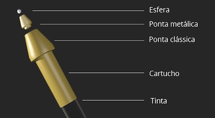
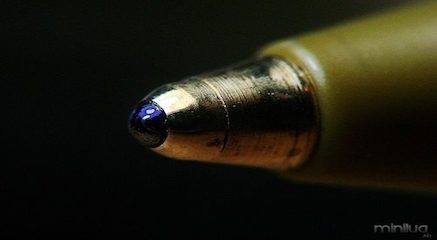
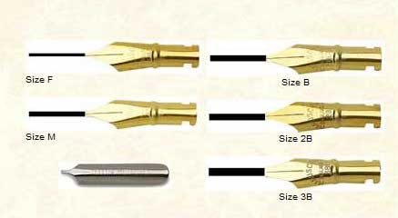
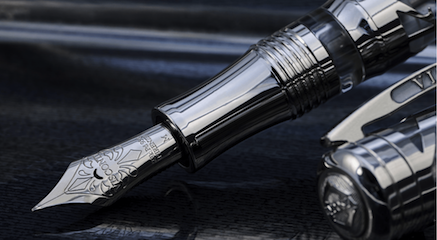
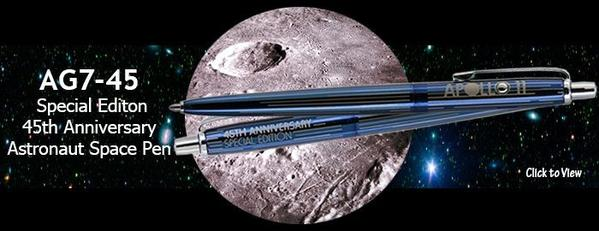
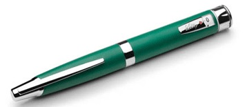

O conceito de uma caneta esferográfica remonta à patente registada por John J. Loud em 30 de Outubro de 1888. Tratava-se de um produto destinado a marcar couros e não foi explorado comercialmente.
Posteriormente, o jornalista húngaro e naturalizado argentino László Bíró inventou a primeira caneta esferográfica, na década de 1930. Ele havia percebido que o tipo de tinta utilizado na impressão de jornais secava rapidamente, deixando o papel seco e livre de borrões. Imaginou então criar uma caneta utilizando o mesmo tipo de tinta. Entretanto, a tinta, espessa, não fluía de maneira regular. A inovação era prática: enquanto a caneta corria pelo documento, a esfera girava no interior do bico, recolhendo a tinta do cartucho e depositando-a sobre o papel; complementarmente, vedava o reservatório, impedido que a tinta secasse (provocando entupimento da caneta) ou vazasse. László Bíró e seu irmão Georg (um químico), entraram com um pedido de patente da sua caneta esferográfica em seu país natal, a Hungria, na França e na Suíça em 1938.
Com a eclosão da Segunda Guerra Mundial, para fugir às perseguições nazistas no seu país, László e Georg tiveram que deixar a Hungria e receberam a patente em Paris. Tendo László encontrado, ainda em 1938, um argentino na Iugoslávia, e tendo este ficado impressionado com a invenção, convidou-o a radicar-se naquele país sul-americano. Quando instalado, o estranho apresentou-se como Agustín Pedro Justo, Presidente da Argentina. Recém-chegados ao país com a ajuda de um amigo chamado Meyne, os irmãos fundaram a companhia "Biró y Meyne" em 10 de junho de 1940, requerendo uma patente argentina em 10 de junho de 1943.
Durante a Segunda Guerra Mundial, o governo britânico adquiriu os direitos de licenciamento desta patente dentro do chamado "esforço de guerra". A Royal Air Force necessitava de um novo tipo de caneta, que não permitisse o escapamento de tinta em altitudes, nos aviões de caça, como as canetas-tinteiro (tinta-permanente). O bom desempenho das novas canetas para a RAF trouxe sucesso ao inventor e ao seu produto.
Em 1944 László Bíró vendeu a patente do seu invento ao norte-americano Eversharp-Faber pela quantia de dois milhões de dólares, e, na Europa, ao francês Marcel Bich.
Nos Estados Unidos, a primeira caneta esferográfica a ser produzida comercialmente, que substituiria a caneta-tinteiro com sucesso, foi apresentada por Milton Reynolds, em 1945. Também se baseava em uma pequena esfera que liberava uma tinta pesada e gelatinosa sobre o papel. As canetas Reynolds foram divulgadas à época como "a primeira caneta que escreve debaixo de água", tendo sido vendidas dez mil unidades quando de seu lançamento. A marca era impressionante, uma vez que cada unidade custava cerca de 10 dólares, custo devido principalmente à nova tecnologia.
Na Europa, as primeiras canetas esferográficas acessíveis foram produzidas em 1945, por Marcel Bich, cujo mérito foi o do desenvolvimento de um processo industrial de fabricação que reduzia significativamente o custo das canetas por unidade. Em 1949, essas canetas foram lançadas comercialmente sob o nome "Bic", uma abreviação do seu sobrenome, e que era fácil de lembrar pelo público. Dez anos mais tarde, as primeiras canetas "Bic" eram lançadas no mercado norte-americano.
A princípio, os consumidores norte-americanos relutaram em comprar uma caneta "Bic", já que outros modelos de canetas esferográficas haviam sido lançados sem sucesso no mercado dos EUA por diversos fabricantes. Para vencer essa relutância do público, a "Bic" veiculou uma campanha em rede nacional de televisão para informar que a caneta esferográfica "escreve logo de cara, sempre!" e que seu preço era de apenas 0,299 dólares. A "Bic" também veiculou anúncios televisivos que mostravam as suas canetas sendo disparadas de espingardas, amarradas a patins de gelo e até montadas sobre britadeiras. Após um ano, a concorrência forçou a queda dos preços para 0,10 dólares por unidade. Atualmente, a empresa fabrica milhões de canetas esferográficas por dia, atendendo a todo o planeta. As canetas são feitas de plástico ou de metal, ao passo que a pequena esfera é feita de latão.
Durante muitos anos, as penas de ganso foram utilizadas para a escrita. Somente no final do século XVIII é que surgiu a ideia de substituir tal instrumento por um objeto manufaturado. Assim, foram criadas as penas de metal, as quais obtiveram relativo sucesso na época, embora as penas de ave continuassem a ser usadas.
Durante o século XIX, vários estudiosos tentaram desenvolver uma espécie de caneta com tinta em seu interior, o que chamamos hoje de caneta-tinteiro. Em 1884, Lewis E. Waterman patenteou tal invenção.
Em 1932, o revisor tipográfico húngaro László Bíró inventou, uma caneta que não borrava e cuja tinta não secava no depósito, como fazia a antiga caneta-tinteiro. Na oficina do jornal em que trabalhava, na cidade de Budapeste, deteve-se a observar o funcionamento da rotativa. O cilindro se empapava de tinta e imprimia o texto nele gravado sobre o papel. Com a ajuda de seu irmão Georg, que era químico, e do amigo Imre Gellért, um técnico industrial, Bíró encontrou a solução. Acondicionou a tinta dentro de um tubo plástico. A tinta, pela força de gravidade, descia para a ponta do tubo. Nessa mesma ponta, ele colocou uma esfera de metal que, ao girar, distribuía a tinta de uma maneira pluriforme pelo papel.
Dando assim origem a caneta tradicional, a esferográfica
A caneta é composta por peças de plástico e metal, que passam por diferentes máquinas até que fique pronta. O tubinho que leva a tinta, por exemplo, é feito de polipropileno, tipo de plástico resistente a substâncias químicas; por isso, é capaz de manter contato com a tinta sem estragar.
A bolinha da ponta da caneta, que passa tinta para o papel, normalmente é de carbeto de tungstênio, metal usado em balas de revólver e 4 vezes mais resistente do que o aço.
|  |  |
Aparo ou Bico de pena é uma ferramenta usada para escrita e desenhos. Atualmente utilizada principalmente na arte da escrita, a pena é famosa pelo seu formato que permite aos artistas usufruir facilmente do chamado "efeito fino-grosso" do traço. Esse efeito costuma ser usado para dar volume aos desenhos, embora possa ser feito também com um pincel. Existem diversos tipos de penas e também diversas grossuras, cada um com seu traço específico e características próprias. Atualmente, o mesmo efeito pode ser obtido por meio das canetas bico de pena.
|  |  |
As canetas-tinteiro usam vários tipos de material. Esses materiais são em geral plástico e metal, nas canetas mais simples. Já as canetas de maior valor são manufaturadas em acrílicos de melhor qualidade, celuloide, assim como metais nobres como a prata e ouro.
Na antiguidade eram usados madeira, bambu e penas de aves para escrever. Havia uma técnica especial para o corte das pontas. As de penas se desgastavam, e constantemente era preciso afinar a ponta, tal como hoje se faz ponta no lápis. Nenhum desses instrumentos de escrita possuía reservatório interno de tinta. Também por ser feito de petróleo que vem da cor
Caneta de gel usa tinta gel que contem alta viscosidade. Esta tinta, pode ser vista em superfícies escuras, pode ser usada em materiais lisos e não absorventes, tem menor probabilidade de vazar para o outro lado do papel e produz linhas mais finas e melhor controladas.
Comercializada pela Fisher SPACEPEN Co., é uma caneta que utiliza cartuchos pressurizados de tinta e tem a capacidade de escrever sob a gravidade zero, de cabeça para baixo, debaixo d'água, sobre papel molhado e gorduroso, em qualquer ângulo, e em faixas de temperatura extremas.
Caneta Espacial Fisher foi inventada pelo industrial e fabricante da caneta Paul C. Fisher e é fabricado em Boulder City, Nevada, Estados Unidos. Canetas de outros fabricantes alegando algumas ou todas as habilidades da Caneta Espacial também têm aparecido no mercado.
Embora o mercado disponibilize diferentes marcas e modelos, as canetas de insulina são divididas em dois grupos:
Caneta de insulina permanente, este instrumento pode ser usado inúmeras vezes, mas para isso é preciso carregá-lo com um cartucho de insulina vendido separadamente em caixas com cinco unidades nas principais drogarias e farmácias do país. Cada refil contém de 150 a 300 unidades de insulina e, dependendo da quantidade usada diariamente, o cartucho dura menos ou mais de um mês. Quando o refil acaba, o paciente deve descartá-lo e carregar a caneta com um novo cartucho. Tendo bons cuidados, a caneta reutilizável pode durar vários anos.
Caneta de insulina descartavel, é um instrumento que é vendido já com o refil de insulina e, ao término do hormônio, o paciente pode descartá-la. As canetas descartáveis tem 300 unidades de insulina e são vendidas em caixas com cinco unidades. Essa opção é geralmente mais conveniente do que as canetas reutilizáveis, porque não é necessário fazer a troca do refil.
László József Bíró foi um inventor húngaro naturalizado argentino. Era judeu, tal como a restante família. Inventou a moderna caneta esferográfica. Bíró nasceu em Budapeste, Áustria-Hungria,em 1899. Apresentou sua primeira versão da caneta esferográfica na Feira Internacional de Budapeste, em 1931. Quando trabalhava como jornalista na Hungria, percebeu que a tinta usada na impressão de jornais secava rapidamente, deixando a folha impressa seca e sem manchas. Tentou usar a mesma tinta em uma caneta-tinteiro, percebendo que a tinta não fluia para a ponta da mesma, pois era muito viscosa. Trabalhando juntamente com seu irmão Georg,um químico, desenvolveu uma nova ponta, consistindo de uma esfera que girava livremente na ponta da caneta, e assim que a mesma fosse colocada na posição de escrever a esfera era molhada na tinta de um cartucho, esfera esta que rotacionada devido ao atrito com uma folha de papel deixava uma trilha de tinta. Biró patenteou a invenção em Paris, em 1938.